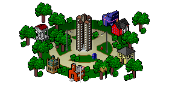

About Tapped In®
From 1997-2013, Tapped In was the online workplace of an international community of
education professionals. K-12 teachers, librarians, administrators, and professional development staff,
as well as university faculty, students, and researchers gathered in Tapped In
to learn, collaborate, share, and support one another.
The Tapped In community is now closed, but the scores of publications
about Tapped In, as well as Tapped In newsletters,
member perspectives, and transcripts
are archived here. Tapped In has also been cited in over 35 publications, including a dozen books.

Tapped In Campus
|
|
 |
|
History
"What a run, fantastic job so well done, many thanks" -- John, Feb 3, 2013.
See more member perspectives
Tapped In hosted the content and activities of more than 150,000 education professionals
in thousands of user-created spaces that contain threaded discussions, shared files and URLs,
text chats, an event calendar, and other tools to support collaborative work.
From its beginnings in 1997
as an NSF-funded research project to support online teacher
professional development, Tapped In quickly evolved into a large online
education community of practice.
With additional funding from NSF, the Tapped In user interface was
redesigned in 2001 as a web-based
online community offering new features to more effectively support group work.
Over its history, more than 50 organizations, including education agencies and institutions of
higher education, consulted with Tapped In staff and became "tenants" in the system to meet the
needs of students and faculty with online courses, workshops, seminars, mentoring programs,
and other collaborative activities. While tenant organizations typically set up private spaces for their
affiliated members, Tapped In has also hosted approximately 40-60 public activities per month designed by
Tapped In members and open to anyone in the community (including tenant members). Volunteers
drove the majority of Tapped In community-wide activity. Because Tapped In was populated
with members of multiple tenant organizations as well as unaffiliated members, it was best seen
as a network of education professionals rather than a single community.
Research on Tapped In ranged from several small qualitative studies to use of
automated methods to better understand online interactions, including analysis of
bridges and
community structures in Tapped In.
See publications to learn more about Tapped In
research. NSF funding for Tapped In ended in 2003, but the community was sustained through
tenant funding until 2008, and then through volunteer efforts until it closed on
March 18, 2013.
|
{kind=link}
{kind=link}
{kind=link}
{kind=link}
{kind=link}
{kind=link}
{kind=link}